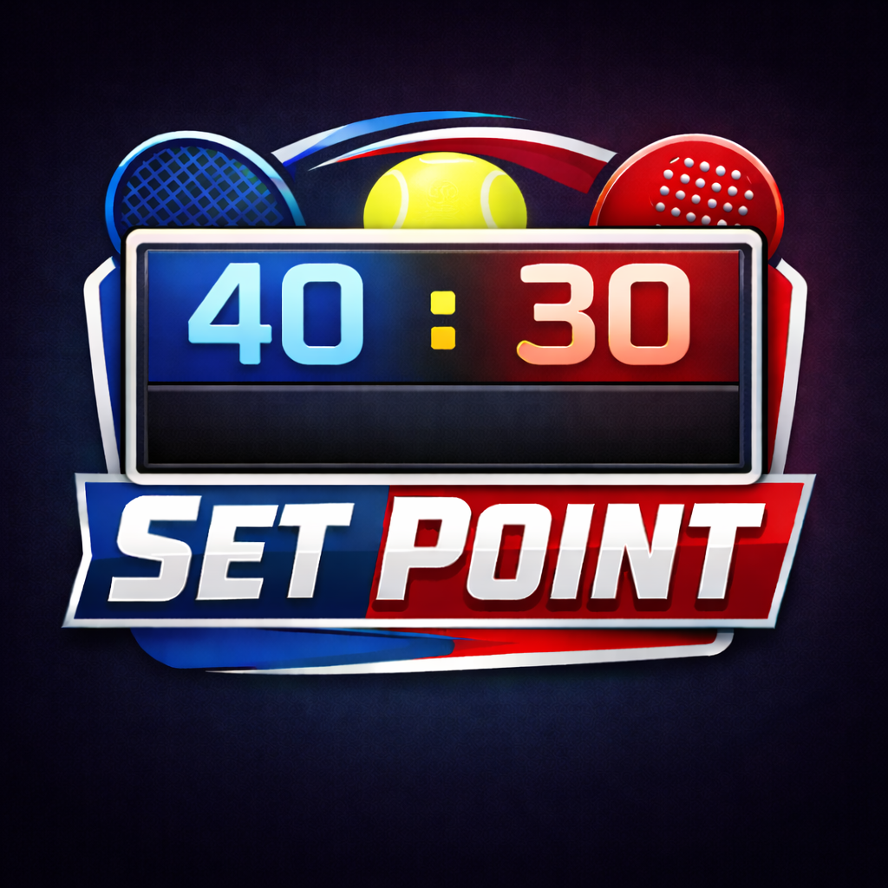

Professional Tennis & Padel Scoring for iPhone & Apple Watch
Set Point is the ultimate tennis and padel scoring app designed for players who want a simple, elegant way to keep track of their matches. Whether you're playing traditional tennis, or prefer Silver or Golden Deuce scoring formats, Set Point has you covered.
We're here to help! Contact us at:
setpointsupport@gmail.comWe typically respond within 24 hours
Simply open the app, select your preferred scoring mode (Traditional Deuce, Silver Deuce, or Golden Deuce), and tap "Start New Match". The scoreboard will appear, and you can tap the left or right side to award points to each player.
Traditional Deuce: Classic tennis scoring with advantage points.
Silver Deuce: First player to win a point at deuce wins the game (no advantage).
Golden Deuce: Receiver chooses which side to receive when at deuce - point wins the game.
Yes! Set Point includes a fully-featured Apple Watch app that syncs seamlessly with your iPhone. You can start and score matches directly from your wrist.
Tap the clock icon on the setup screen to view all your completed matches. Your match history includes the date, scoring mode, and final score of each match.
Yes! There's an undo button located in the centre of the scoreboard on both iPhone and Apple Watch. Simply tap the undo button to reverse the last point awarded.
Set Point focuses on clean, distraction-free match scoring. Match results are saved to your history, but detailed statistics are not currently tracked.
Yes! Set Point uses extended runtime sessions to keep the scoreboard visible throughout your entire match, even during long rallies.
You can swipe left on any match in your history to delete it.
Make sure both devices are connected and have Bluetooth enabled. Try restarting both the iPhone and Apple Watch app if sync issues persist.
Set Point uses extended runtime to keep the app active, but very long matches (over 2-3 hours) may require you to tap the screen occasionally to keep it active.
Open the Watch app on your iPhone, scroll down to Set Point, and ensure "Show App on Apple Watch" is enabled.
Set Point automatically adjusts the scoreboard appearance. You can customise themes during a match by tapping the theme selector if available.
We love hearing from our users! If you have ideas for new features or suggestions for improvement, please email us at setpointsupport@gmail.com. Your feedback helps us make Set Point better for everyone.
Set Point respects your privacy. All match data is stored locally on your device and synced via iCloud (if enabled). We do not collect, store, or share any personal information or match data on external servers.